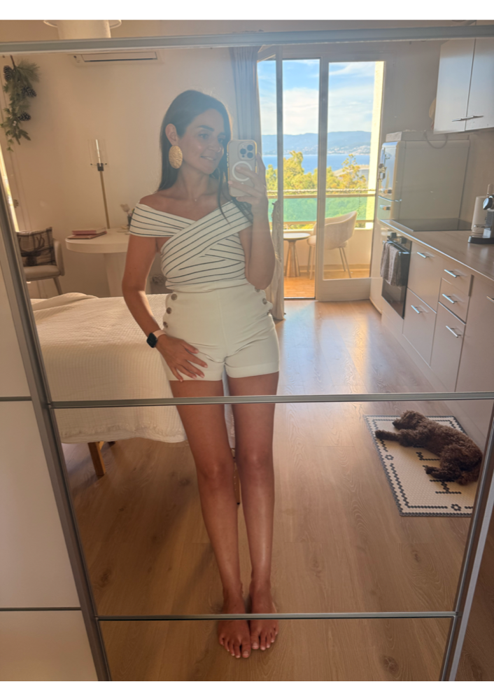
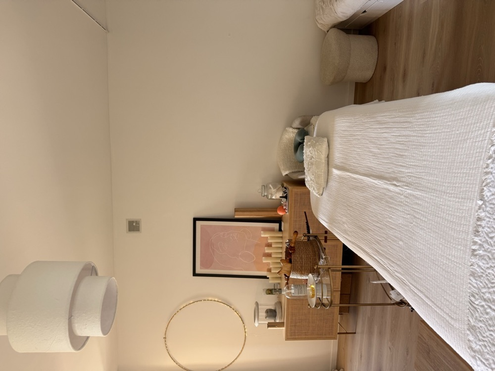
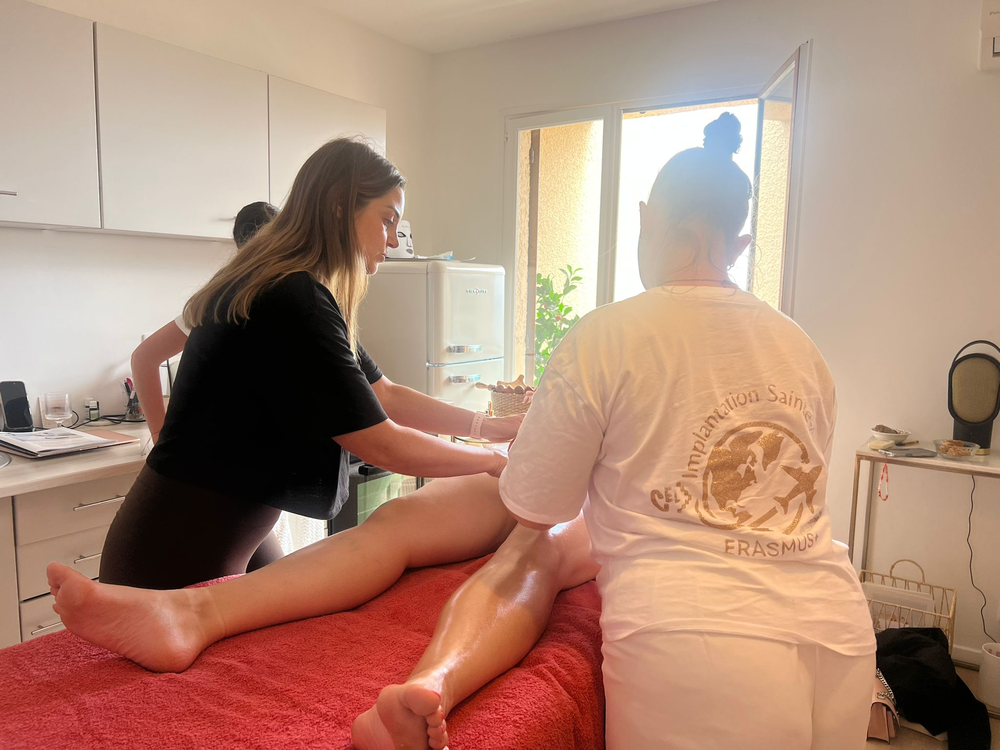

Passionnée par le bien-être et les soins manuels depuis toujours, je me suis formée en 2021 à la méthode Renata França — drainage lymphatique, remodelage corporel et Miracle Face — auprès de Nathalie Duarte à Marseille. En 2022, j'ai approfondi mon expertise en me certifiant à la madothérapie auprès d'Olfa Perbal Paris.
Certifications, méthodes utilisées (Renata França, Olfa Perbal Paris), philosophie de soin.
Formée aux meilleures méthodes internationales de drainage et remodelage.
Des résultats visibles dès la première séance, durables sur le long terme.
Un accompagnement personnalisé, à l'écoute de chaque cliente.

La salle de soin

La salle de formation